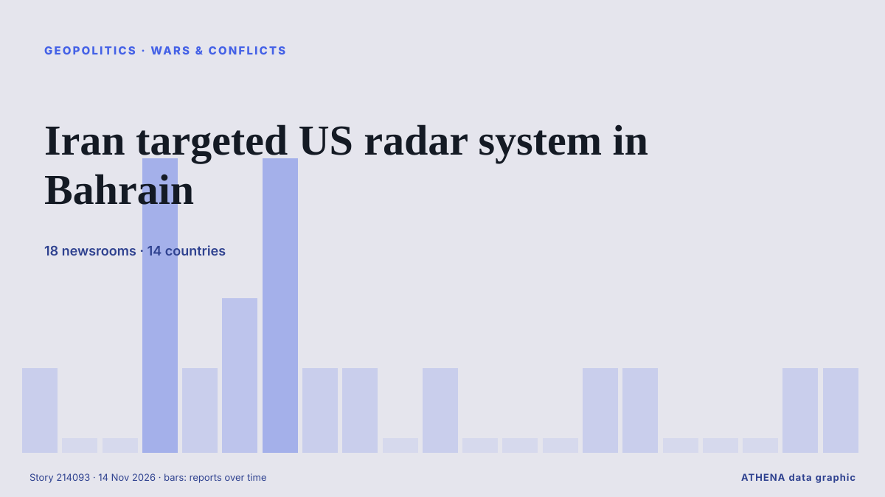

Geopolitics, Politics & Security
SponsoredPresented by  Cybernetics and Artificial Intelligence Lab Welcome to the Cybernetics and Artificial Intelligence Laboratory, established at the Department of Business Administration of the National and Kapodistrian University of Athens. The lab is headed by Professor Dimitrios Thomakos. The lab aims to do research that can be published in top venues. Our research uses tools and methods of Artificial Intelligence, and lies in the following areas: - Forecasting - Decision making - Cyber security - Finance We are always looking forward to collaborating with exceptional students!
Cybernetics and Artificial Intelligence Lab Welcome to the Cybernetics and Artificial Intelligence Laboratory, established at the Department of Business Administration of the National and Kapodistrian University of Athens. The lab is headed by Professor Dimitrios Thomakos. The lab aims to do research that can be published in top venues. Our research uses tools and methods of Artificial Intelligence, and lies in the following areas: - Forecasting - Decision making - Cyber security - Finance We are always looking forward to collaborating with exceptional students!

Wars & conflictsIran targeted US radar system in Bahrain
Iran claimed it struck US radar systems in Bahrain, while the US said it had intercepted the attacks. from DW English
| 1 Nov | 212 |
|---|---|
| 2 Nov | 316 |
| 3 Nov | 352 |
| 4 Nov | 397 |
| 5 Nov | 328 |
| 6 Nov | 227 |
| 7 Nov | 211 |
| 8 Nov | 200 |
| 9 Nov | 315 |
| 10 Nov | 287 |
| 11 Nov | 253 |
| 12 Nov | 255 |
| 13 Nov | 166 |
| 14 Nov | 7 |
Lula lands in Philippines; Brazil seeks to be ASEAN Dialogue Partner
Our experts unpack what Lula’s victory means for Brazil’s ties with Washington and how it could reshape a region trending right. from Atlantic Council
Türkiye publishes law approving ratification of Mecca joint defense pact
Opposition Republican People’s Party (CHP) leader Kemal Kılıçdaroğlu has stated his party will vote in favor of a defense agreement between Türkiye, Pakistan and Saudi Arabia when it comes before… from Hürriyet Daily News
EU institutions, E5 to represent Europe in Ukraine peace talks
After coveting a seat in the Ukraine war discussions, Europe is poised to get one. from The New York Times (World)
Armenia Stays Out Of European Security Declaration At Dublin Summit
More than 50 leaders are expected in Dublin, with drone teams, exclusion zones and additional Garda resources deployed. from Irish Examiner
Finland reports strike on Russian warship in Baltic Sea
The Finnish military said on Thursday that their forces had detected a “strike” on a Russian warship in the Baltic Sea the previous day, but the security situation in the area remained stable. from Ukrinform (English)
Europe pushes for seat at Ukraine peace talks but lacks unified voice
European nations are seeking an envoy to represent them in talks on ending the Russia-Ukraine war, concerned that a U.S.-backed process will leave them sidelined as Moscow and Washington decide the… from The National Herald
Pope Leo returns to former diocese where he ‘learned to be a shepherd’
The pope is on tour of Peru where he spent two decades as a missionary and bishop. from The Irish News (Belfast)
Zelensky reports continued Starshield restrictions for Ukraine
According to the head of Kiev regime, the US side offered no explanation for what was happening. from TASS (English)
Trump says Gulf allies urged restraint on Iran, admits war hurt Republicans in midterms
With the political constraints imposed by the US midterm elections lifted, Donald Trump may become more erratic and unpredictable. from The Scotsman
Putin suggests no Ukraine compromise in meeting with US envoys
The Russian president says he will not water down his territorial demands to control parts of Ukraine that Russia claims to have annexed. from Free Malaysia Today
Singapore barred Alice Huang from re-entry following investigation
SINGAPORE: Alice Huang, the alleged Chinese spy at the heart of a scandal at chipmaker Nvidia , left Singapore in February and was barred from re-entering following an investigation into possible… from New Straits Times
US envoys Witkoff and Kushner arrive at Kremlin
Kirill Dmitriev added that peacemakers "will prevail" from TASS (English)
Russian ambassador to US Alexander Darchiev dies suddenly at 66
The announcement called Darchiev ‘an outstanding diplomat, an experienced leader, a kind friend, and a mentor’ from The Independent
3 injured, dozens evacuated after Russian drone damages Kyiv medical facility in overnight attack
A downed drone caused a fire at a medical facility in the capital's Shevchenkivskyi district in the early morning, partially destroying its second floor, according to Ukraine's State Emergency… from Kyiv Independent
El Salvador deploys armed robots to fight gangs in Haiti
El Salvador’s President Nayib Bukele has released a video showing armed robots during an operation against gangs. from Al Jazeera English
Iran's Guards say they targeted a US early-warning radar in Bahrain
The Guards said the strike was in retaliation for what they described as an air attack on a telecommunications tower in Iran's southern Sirik county. from Free Malaysia Today
Russian military officer killed in car explosion in St. Petersburg
A Russian serviceman was killed when an explosive device detonated in his car in St Petersburg on 12 November. from Ukrainska Pravda (English)
France criticises ‘demagogic’ move by Israel to ban hard-left leader Melenchon
PARIS, Nov 13 - France has criticised as \"demagogic\" a decision by Israel to ban French hard-left presidential candidate Jean-Luc Melenchonand another leading figure in his France Unbowed (La… from The Straits Times
Scott Colom, a Democrat, wins Mississippi Senate seat in historic upset
On “Forbes Newsroom,” NAACP President Derrick Johnson discussed the still-unresolved Mississippi Senate race in which Democrat Scott Colom is up by about 2500 against Rpublican incumbent Cindy… from Forbes Business
President Ilham Aliyev attended opening plenary session of the 9th European Political Community Summit - UPDATED
The war in Ukraine will be among issues discussed as Ireland hosts the ninth meeting of the European Political Community. from Evening Standard (London)
Abdul El-Sayed on Democratic leadership, health care access and inspiring a new generation
With New Hampshire and Georgia staying in Democratic hands, Republicans now look to Michigan for a pickup, where Democrat Abdul El-Sayed is competing with Republican Mike Rogers. from France 24 English
Hegseth pins medal on soldier who reprimanded his group for laughing at Tomb of the Unknown Soldier
Hegseth’s group sparked online backlash after laughter at the memorial went viral on Veterans Day. from The Independent
Trump says US does not need Iran deal, directs Vance to focus on domestic corruption
By Bo Erickson WASHINGTON, Nov 12 (Reuters) - President Donald Trump saidon Thursdaythe US does not need a deal with Iran and directedVice President JD Vance, who has played a role in efforts to… from Al-Monitor
China accuses US of using spy claims to justify tech blockade
The comment follows claims that Nvidia boss Jensen Huang was the victim of a Chinese espionage plot. from Free Malaysia Today
Ukraine and Russia agree to large-scale prisoner exchange after second day of talks
Thousands of Ukrainians are held in Russian captivity. from The Independent
With US midterms underway, courts rebuff Trump's pressure on state election officials
Federal judges have repeatedly rejected the Trump administration's efforts to wrest control over state voting processes and intimidate state and local elections officials. from Los Angeles Times (World)
Russia-US-Ukraine trilateral talks resume for second day in Abu Dhabi
Rustem Umierov said Ukraine's team is en route to Abu Dhabi for trilateral talks on 10-11 November, with European and NATO representatives also attending. from Ukrainska Pravda (English)
Saudi coalition says intercepted 3 Houthi missiles fired at Riyadh
Saudi-led coalition claims Houthi missile destroyed over Eastern Province The Saudi-led coalition air defences intercepted and destroyed a ballistic missile launched by the Houthis toward the… from Middle East Eye
Democratic leader Hakeem Jeffries announces bid for US House speaker
'I write to humbly request your support in connection with my candidacy to serve as the next Speaker of the House of Representatives,' says Jeffries in letter. from Anadolu Agency (English)
US asks Iraq to shut most Iran border crossings, Iraqi foreign minister says
Nov 8 - The US Treasury has asked Iraq to close all border crossings with Iran except for two as part of Washington's policy of increasing economic pressure on Tehran, Iraqi Foreign Minister Fuad… from The Straits Times
Iran will strike US bases in Europe in any war, warns Rezaei
Iranian officials have explicitly threatened in recent weeks to strike US military bases in Europe if they are used to launch attacks against Iran. from The New Arab
Iran designates Argentina's navy and air force as 'terrorist organisations'
Tehran has designated Argentina’s navy and air force as “terrorist organizations,” Iran’s Foreign Ministry said on Wednesday, in a reciprocal move following Buenos Aires’ designation of the Islamic… from Cyprus Mail
Erdogan calls Israel's war on Gaza an 'ecocide' at UN's COP31
In recent days, heavy rainfall and subsequent flooding destroyed many of the tents and makeshift shelters that Palestinian residents now live in. from The New Arab